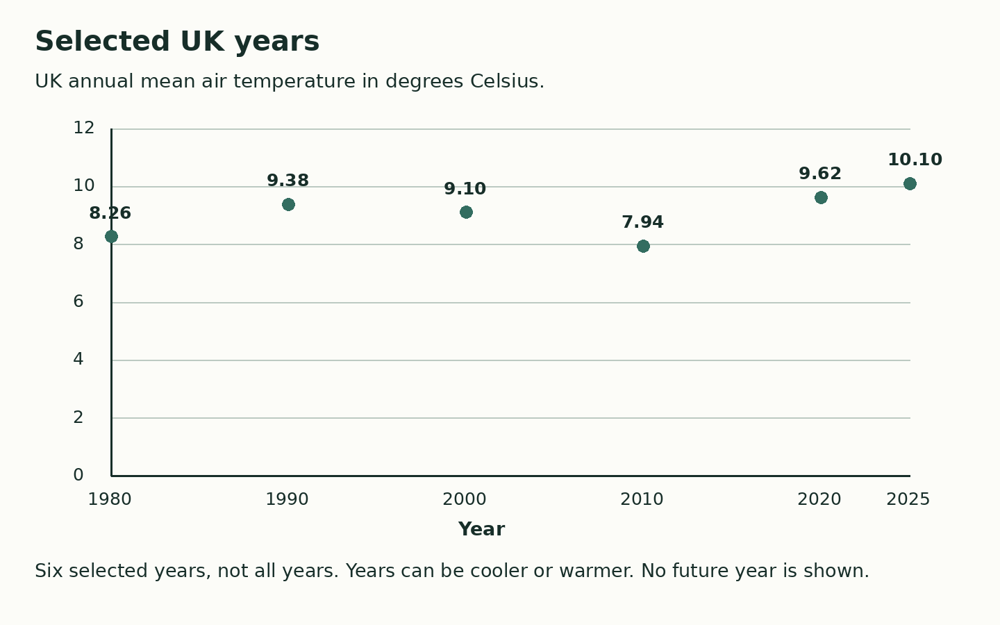

Friday 19 March 2027 | P2 | 40 minutes | Year A
Humanities · GROW · Spring 2 Week 4 · HUM-GROW-S2-W04
Learning outcome: Compare how different communities respond to change (RE link).
Three invented UK groups plan an event as the climate changes. They all care about people and use maps and data. Their values can overlap. They choose some different actions. These are examples for a task, not reports about real groups. People within any worldview can differ. You do not need to share your own beliefs.

A map key explains marks. A grid helps you find a place.
Read the year and unit before using a data value.
A shared aim can go with different actions. Reasons can overlap.
A UK mean is not a measured trend at our school or a forecast.
Where this leads: People who plan places and events use maps, data and different views to include people.